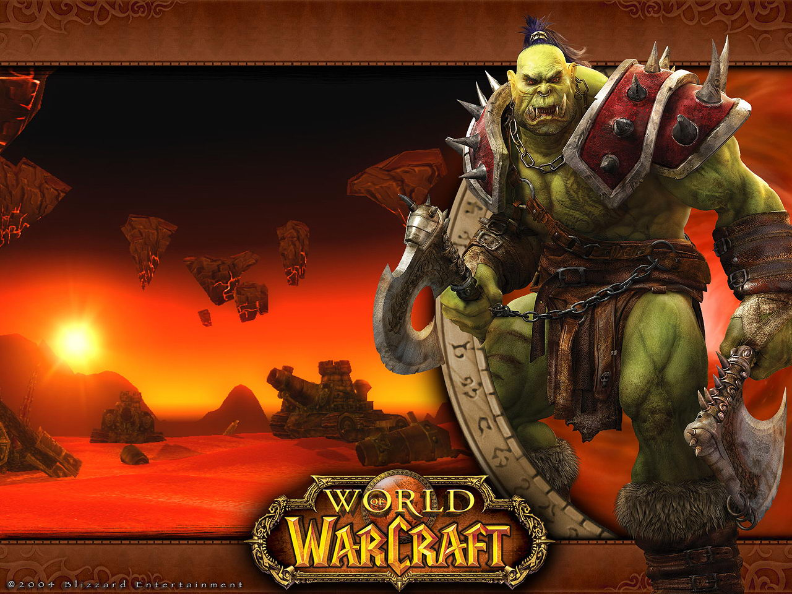

HORDA
Orcs: São grandes e musculosos, tem pele em tons de verdes, cabelos amarrados em rabos ou tranças.
História: Nascidos no infernal mundo de Draenor, foram trazidos até Azeroth por meio do Dark Portal (Portal Sombrio) e forçados a entrar em guerra com os humanos. Apesar de poucos saberem de sua história, eles eram um sociedade xamânica no mundo de Draenor. Tragicamente, os nobres clãs de Orcs foram corrompidos pela Burning Legion e usados como peões na invasão de Azeroth. Terminada a guerra, foram aprisionados pelos humanos e feitos escravos. A situação ficou assim até serem libertados por Thrall, que conseguiu juntar uma rebelião contra a Aliança. Liderados pelo jovem Thrall, conseguiram reconquistar sua força e honra. Agora os Orcs estão prontos para a luta, não por razões de conquista, mas sim, para a sobrevivência em sua terra adotiva.
Classes Disponiveis: Hunter, Rogue, Shaman, Warlock, Warrior
Vocação: Warrior,Shaman .
Vantagens Raciais: Quando em estado de Enrange (Fúria) seu dano é aumentado, Maior resistência a efeitos de Stun (Atordoamento), O Dano causadoo por pets dos Orcs é maior, Maior chance de acertar golpes com maxados.

Trolls:Corcundo, com grandes presas (muitas vezes semelhantes a marfins de elefantes) e corpos magérrimos de tons azulados.
História: Uma de suas tribos foi obrigada a deixar seus preconceitos de lado quando encontraram o chefe orc, Thrall. Os Trolls da Tribo Darkspear, que há muito tempo haviam sido exilados de suas terras ancestrais no vale da Stranglethorn, quase foram destruídos por um exercito de criaturas aquaticas conhecidos como murlocs, mas Thrall os salvou junto com exercito da Horda. Em consideração à sua ajuda, os Trolls fizeram um juramento de eterna união com a Horda.
Classes Disponiveis: Hunter, Mage, Priest, Rogue, Shaman, Warrior
Vocação: Hunter.
Vantagens Raciais: Berserk – Aumenta sua velocidade de ataque e conjuração de magias, Regeneração mais rápida que outras raças, Dano contra Bestas é maior, Sua chance de causar dano critico com armas de ar remeço e com arcos é maior, Efeitos que diminuam a movimentação tem menor duração.
Orcs: São grandes e musculosos, tem pele em tons de verdes, cabelos amarrados em rabos ou tranças.
História: Nascidos no infernal mundo de Draenor, foram trazidos até Azeroth por meio do Dark Portal (Portal Sombrio) e forçados a entrar em guerra com os humanos. Apesar de poucos saberem de sua história, eles eram um sociedade xamânica no mundo de Draenor. Tragicamente, os nobres clãs de Orcs foram corrompidos pela Burning Legion e usados como peões na invasão de Azeroth. Terminada a guerra, foram aprisionados pelos humanos e feitos escravos. A situação ficou assim até serem libertados por Thrall, que conseguiu juntar uma rebelião contra a Aliança. Liderados pelo jovem Thrall, conseguiram reconquistar sua força e honra. Agora os Orcs estão prontos para a luta, não por razões de conquista, mas sim, para a sobrevivência em sua terra adotiva.
Classes Disponiveis: Hunter, Rogue, Shaman, Warlock, Warrior
Vocação: Warrior,Shaman .
Vantagens Raciais: Quando em estado de Enrange (Fúria) seu dano é aumentado, Maior resistência a efeitos de Stun (Atordoamento), O Dano causadoo por pets dos Orcs é maior, Maior chance de acertar golpes com maxados.
Undeads – (Mortos-Vivos):Os Mortos-Vivos se parecem com zumbis e tanto o versão fêmea como macho, têm os ossos da coluna visiveis e o aspecto de um humano morto em fase de decomposição. Os Mortos-Vivos podem ter diferentes formas de cabelo e formas faciais, como por exemplo ter os ossos dos maxilares expostos. Os seus corpos têm aspecto débil e uma côr esbranquiçada. Os Undead também têm alguns ossos de fora da pele.
História: Antigos membros da aliança de Lordareon governada por Arthas durante o episódio de Warcraft III, os Forsaken eram membros da aliança, que foram exilados pela mesma após se tornarem mortos-vivos, sem rumo eles se uniram a “elfa-banshee” Sylvanas Windrunner, uma ex serva da Aliança na sua batalha da Scourge contra Azeroth. Fora do comando da Burning Legion, os Forsaken instalaram-se nos esgotos da capital de Lordareon e criaram a Undercity. As alianças com a Horda tornaram a vida para os Forsaken mais fácil mas mesmo assim, ambos desconfiam-se mutuamente.
Classes Disponiveis:Mage, Priest, Rogue, Warlock, Warrior.
Vocação: Warlock.
Vantagens Raciais: Podem ficar imunes a efeitos de Fear (Medo) – Sleep (Dormir) – Charm (Apaixonado), Podem consumir os corpos de suas vitimas humanóide para se regenerarem, Seu fôlego sob a água é maior, Maior resistência a Danos baseados no Elemento Shadow.
Taurens:Taurens são humanóides grandes e musculares e bovinos na aparência, completa com cascos e chifres. variando entre 2,15 metros e 3 metros de altura, e pesando entre 170 a 300 quilos. Seus corpos imensos são cobertos de pêlo fino, curto, que varia nas cores preto, cinza, branco, vermelho, marrom, bronze e todas as combinações ou variações disso.
História:Taurens são uma das mais antigas raças de Azeroth e antes de se unirem à Horda eram nômades, dando pouca importância aos eventos mundiais. Quando foram encontrados por Thrall, eles sofriam fortes ataques por parte dos Centauros e suas tribos estavam espalhadas. Segundo as tradições Taurens, eles foram criados pela Terra-Mãe no princípio dos tempos e eram conhecidos como os Shu’halo.
Classes Disponiveis:Druid, Hunter, Shaman, Warrior.
Vocação: Shaman, Druid.
Vantagens Raciais:Podem usar Stomp para atordoar inimigos próximos, Tem o seu HP (vida) maior que o normal, Sua habilidade com Herbalismo é maior, Maior resistência a ataques baseados em Nature.

Bloob Elf (Elfo do Sangue):Os Elfos de Sangue são mais altos e mais delgados do que os seres humanos, medindo mais de 2 metros de altura e pesando entre 42 e 72 quilos. Têm cabelo variando do branco ao ruivo e a pele clara, com os olhos coloridos brilhante intensos que parecem incandescer com uma luz interna. Enquanto muitos elfos têm os olhos azuis ou verdes, casos de olhos violeta ou vermelho. Tornam-se adultos aos 110 anos, uma idade anciã em aproximadamente 350 anos, e podem viver até 400 anos antes de morrer de velhice.
História:A origem dos Elfos de Sangue é a mesma dos Elfos Noturnos. No passado porém os Elfos de Sangue, que até então eram chamados de Altos Elfos e foram banidos da terra dos Elfos Noturnos por drenarem as energias vitais da natureza para saciar seus vícios. Chegando em terra estrangeira e enfraquecidos pela viagem os Altos Elfos tiveram que lutar com várias raças, em especial contra os Trolls, mas conseguiram se reerguer e fundar sua nação, Quel’Thalas, após se aliarem aos Humanos. Essa aliança durou anos até a invasão e destruição de sua capital pelos mortos-vivos do Flagelo. Após esse evento os Altos Elfos passaram a se chamar Elfos de Sangue em memória daqueles que morreram durante o ataque, mas se mantiveram aliados aos Humanos. Após atuar sob o comando do Grande Marechal Garithos, conhecido por seu preconceito para com outras raças, Kael’thas Sunstrider é condenado à morte por se associar às Nagas para se salvar de mais um ataque da Escória. Salvo do calabouço pela líder das Nagas, Lady Vashj, os Elfos de Sangue renegam a sua aliança secular com os Humanos e se fecham em sua cidade mágica, protegidos do mundo exterior, enquanto seu líder foge para as “Outlands”, juntamente com Illidan e Lady Vashj, em busca da promessa da fonte que saciaria o vício de magia de seu povo. Recentemente os Elfos de Sangue voltaram a sair de sua cidade e buscaram aliança com a Horde, amparado pelos mortos-vivos abandonados, liderados Lady Sylvanas Windrunner.
Classes Disponiveis:Hunter, Mage, Paladin, Priest, Rogue, Warlock
Vocação: Qualquer uma das classes magicas, (Mage, priest, paladin ou warlock).
Vantagens Raciais:Mais aptidão com a Profissão Enchanting (Encantador), Podem regenerar mana- energia ou poder rúnico mais rápido que outras raças, Podem silenciar inimigos próximos, Maior resistência a danos mágicos.